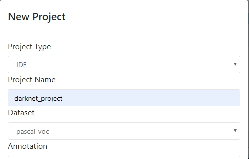

Train darknet YOLO_V3 with VOC dataset¶
Outline¶
This document is going to explain how to use darknet docker image to train YOLO_V3 on VOC. Before diving into it, please also refer to the official web site of YOLO: Real-Time Object Detection because most of the contents are similar
Prepare Dataset¶
Please refer to Download pascal VOC dataset
Create Project¶
Create project for darknet and choose pascal-voc dataset
Bild darknet¶
Launch jupyter for darknet building

On jupyter notebook terminal, create a darknet folder and git clone darknet source code:
git clone https://github.com/pjreddie/darknet
Change Makefile to use GPU and CUDNN:
GPU=1
CUDNN=1
Build darknet code:
make -j
Download config files for yolov3:
wget https://raw.githubusercontent.com/pjreddie/darknet/master/cfg/yolov3-voc.cfg
Download pre-trained weights file and put to /dataset folder:
wget https://pjreddie.com/media/files/darknet53.conv.74
mv darknet53.conv.74 /dataset/
Your yolov3 folder will look like this:
# ls -l
total 3580
drwxr-xr-x 13 root root 4096 Jun 20 03:26 darknet
-rw-r--r-- 1 root root 8334 Jun 20 03:26 yolov3-voc.cfg
...
Trail run the training:
./darknet detector train /dataset/voc.data yolov3-voc.cfg \
/dataset/darknet53.conv.74 -gpu '0'
Warning
If the training failed with segmentation fault, try to disable CUDNN in Makefile
Train The Model¶
Start a training job with following parameters
- job name: job1
- Package Path: darknet
- GPU:1
- User Arguments: ./darknet detector train /dataset/voc.data yolov3-voc.cfg /dataset/darknet53.conv.74 -gpu ‘0’

Note
The project dataset pascal-voc will be mounted to path /dataset in trining environment
You can check and download the submitted training job on the project page in web portal.